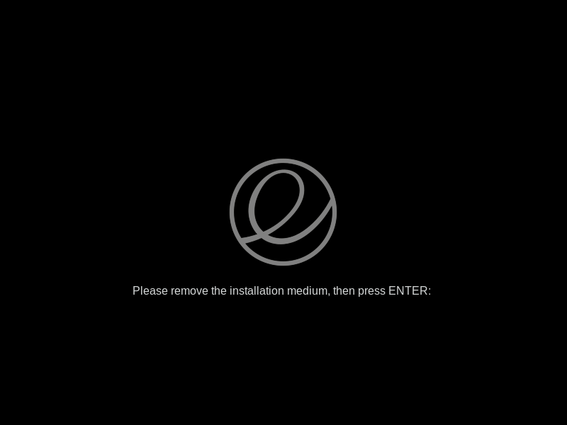
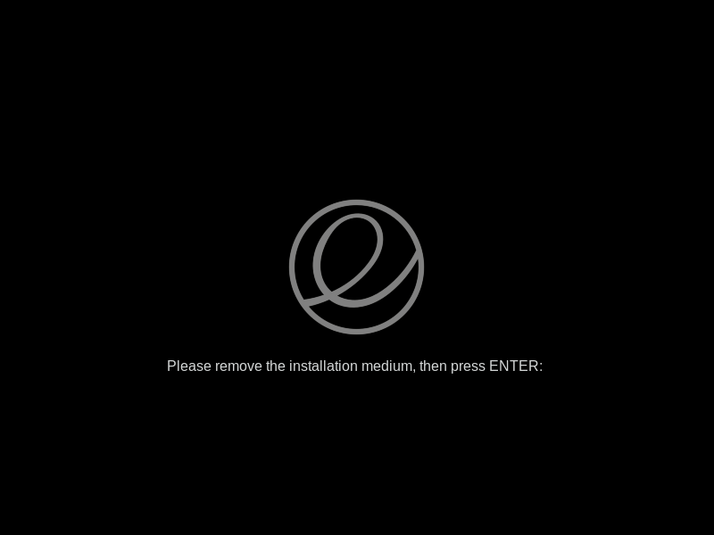

Install elementary OS
Before starting the installation of elementary OS ensure you have:
If you do not have a bootable elementary OS USB or DVD:
Learn how to create a bootable elementary OS USB
To boot your computer with your bootable elementary OS USB or DVD:
If you see a prompt to restart your computer, congratulations, you have successfully installed elementary OS!

- A Desktop or Laptop Computer
- A bootable elementary OS USB or DVD
If you do not have a bootable elementary OS USB or DVD:
Learn how to create a bootable elementary OS USB
To boot your computer with your bootable elementary OS USB or DVD:
- Turn your computer off.
- Insert your bootable elementary OS USB into a USB port on your computer.
or
Insert your bootable elementary OS DVD into an optical drive on your computer. - Turn your computer on.
- Press the bootmenu key on your computer's keyboard
- Select your bootable elementary OS USB or DVD on the bootmenu
- For a standard elementary OS installation, click Yes to every default configuration setting provided.
If you see a prompt to restart your computer, congratulations, you have successfully installed elementary OS!
